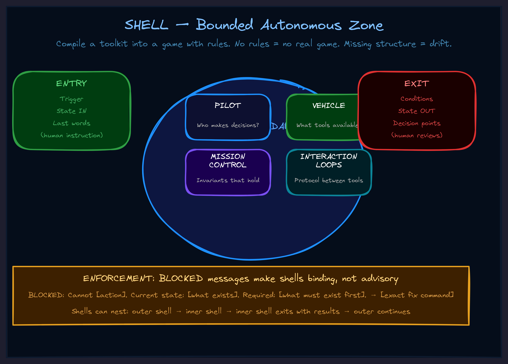

May 2026Level 2 · ToolsLevel 4 · HarnessesWorlds & loops
SHELL: Turn Any Toolkit Into a Game Your Agent Can Play
Most AI agents fail not because they lack tools, but because nobody defined the rules of the game. SHELL is the missing compilation step.

Tools Without Rules
Your team just gave the AI agent access to 30 tools. A knowledge graph. A code review system. A deployment pipeline. The agent has everything it needs.
And it still drifts. Makes invalid moves. Forgets what it was doing. Calls tools in the wrong order. Exits at the wrong time. Never quite finishes.
This is the most common failure mode in agent systems today. Not missing capability. Missing structure.
You would never hand someone a chess set and say "you have all the pieces, go win" without first explaining the rules, the board boundaries, and when the game is over. But that is exactly what most agent architectures do with tools.
The Insight: Boundary Crossing Creates Context
The breakthrough came from noticing what four very different things have in common:
- Video game dungeons. You enter an instance. Different rules apply inside. You exit back to the overworld with loot.
- Legal jurisdictions. A company operates under Delaware law inside Delaware. Cross the border, different rules.
- Programming contexts. Enter a
withblock. Invariants hold inside. Cleanup runs on exit. - Meditation states. Enter a specific state of concentration. Certain operations become possible. You return to ordinary awareness with insight.
What do these share? Boundary crossing creates context switch. Inside the boundary: autonomous operation under local rules. The boundary has entry conditions, operating rules, and exit conditions. Exit returns you to the outer context with results.
This is not a metaphor. This is a design pattern.
What a SHELL Actually Is
A SHELL is a bounded autonomous zone compiled from a toolkit. You take a raw set of tools — an API, a function library, a set of integrations — and you compile it into a game with rules, a persona, clear boundaries, and enforcement.
Compilation has four steps:
1. Define the Game Rules
Every shell needs four things specified:
Pilot: What makes decisions inside? Vehicle: What tools are available? Mission Control: What invariants must hold? Interaction Loops: What's the protocol between tools?
If any of these slots is blank, the game has a hole. An undefined Mission Control means no alignment check — the agent drifts. Undefined Interaction Loops means the agent does not know which tool calls relate to which. Partial specification creates partial games that break under pressure.
2. Define Entry and Exit
Fuzzy boundaries create fuzzy autonomy. The shell needs crisp entry and exit protocols:
Entry: Trigger: What activates this shell? State IN: What context passes in? Last words: What's the human's final instruction? Exit: Conditions: What ends the shell? State OUT: What results come back? Decision points: What does the human review?
If it is unclear when the agent has "entered" the shell, it will apply shell rules outside or parent rules inside. If exit conditions are undefined, the agent might never return to you, or return at the wrong time.
3. Make It Experiential
Abstract game rules do not guide behavior. An agent can "know" the rules without embodying them. The persona frame bridges that gap:
I am: [role inside this game] My goal: [what winning looks like] I cannot: [hard constraints] I can: [available moves] I know I'm winning when: [success signals]
Structure alone is skeleton. The persona is what makes it move.
4. Enforce It
Without enforcement, shells are suggestions, not boundaries. The agent can ignore rules, make invalid moves, exit at wrong times. The game is not real unless invalid moves are actually blocked.
The enforcement layer returns corrective feedback:
BLOCKED: Cannot [action]. Current state: [what exists]. Required: [what must exist first]. → [exact command to fix it]
This is what makes the shell binding rather than advisory. The persona defines the game. Enforcement makes it playable.
Shells Nest
Shells can contain shells.
Imagine an agent operating in a "Framework Synthesis" shell — reading conversations, identifying patterns, structuring a document. Midway through, it needs to capture concepts in a knowledge graph. That triggers entry to a "Knowledge Graph" shell. The inner shell operates under its own rules, captures the concepts, exits with results. The outer shell picks up where it left off.
This creates stack-like execution. Each level has its own rules, its own persona, its own boundary. The outermost shell exits back to the human with a complete result.
This is not theoretical. This is how you build agent systems that handle complex, multi-step operations without losing the thread.
A Concrete Example
Take a code review toolkit: git diff tools, file analysis, comment posting.
Without a SHELL, you hand the agent these tools and say "review this PR." It reads some files. Misses others. Comments on unchanged lines. Forgets to categorize issues. Produces an unstructured dump.
With a SHELL:
Game Rules:
Pilot: Review strategy (security-first, style-first, comprehensive)
Vehicle: get_diff, analyze_file, post_comment, get_context
Mission Control:
- Must analyze before commenting
- Must categorize every issue (bug, style, security)
- Cannot comment on files not in the diff
Loops:
Load diff → identify files → analyze each →
categorize → generate summary → post
Persona:
I am a code reviewer.
My goal is actionable, categorized feedback on every changed file.
I cannot comment on unchanged files or skip categorization.
I know I'm winning when all files are reviewed and issues are typed.
Enforcement:
BLOCKED: Cannot post comment. File not in diff.
BLOCKED: Cannot generate summary. 2 files unanalyzed.
Same tools. Completely different outcome. The toolkit became a game with rules the agent actually follows.
Why This Matters for Your Business
Every AI agent deployment in your organization is a toolkit without a game. Your teams give agents access to CRMs, databases, email systems, internal tools — and then wonder why the agents need constant babysitting.
The fix is not more tools. It is not more context. It is not a bigger model.
The fix is compilation. Define the rules. Define the boundaries. Give it a persona. Enforce the constraints. Now your toolkit is a game the agent can play reliably, repeatedly, without drift.
This is the difference between an agent that has access to your systems and an agent that knows how to operate within them.
A toolkit without a shell is just a pile of capabilities. A toolkit with a shell is a game an agent can win.
Monday Morning Protocol
Pick one toolkit your team uses repeatedly. Fill in the four slots:
- Game Rules. What decides? What tools? What must stay true? What is the flow?
- Boundaries. What triggers entry? What comes out? When is it over?
- Persona. Who is the agent inside this game? What does winning look like?
- One guard. What is the most common mistake? Block it with corrective feedback.
You now have a compiled SHELL. The toolkit is a playable game zone. The agent stops drifting and starts operating.
If you want help compiling your first SHELL — or figuring out which toolkits in your organization need one most — let's talk.